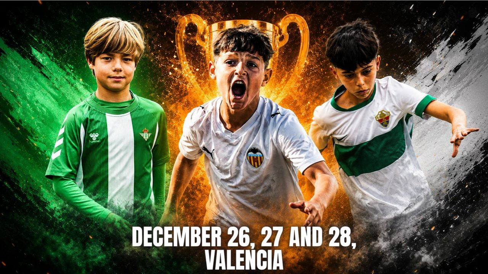

Turia Cup Winter Edition — 26, 27 y 28 de diciembre, Valencia. Presentación, categorías, sedes, programación y servicios. Documento en inglés (13 páginas, PDF).

Tu dispositivo no muestra el PDF dentro de la página. Toca la portada o usa los botones de arriba para verlo o descargarlo.